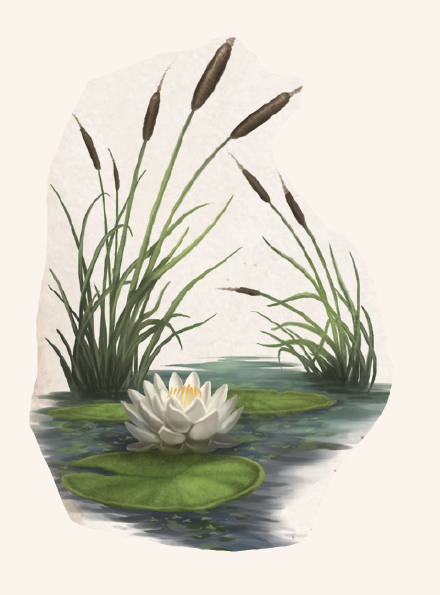

Weißgelber Lotos ist nur auf alchimistischem Weg vom deutlich giftigeren Weißen Lotos zu unterscheiden: Wird eine bestimmte Lösung aufgetragen, schlägt die Blütenfarbe ins Gelbe um. Sein Name ist daher ein akademischer Kunstgriff, der nur der Abgrenzung dient. Beide Arten gedeihen südlich der Linie Havena-Perricum in Teichen und an Seeufern. Zwischen Ingerimm und Praios können die Blüten geerntet werden.
Im Gegensatz zu den meisten anderen Lotosarten ist beim Weißgelben Lotos nicht der Blütenstaub, sondern die ganze Blüte minder giftig. Wird sie verzehrt, führt dies zu kurzzeitigen, aber heftigen Halluzinationen, die alle Sinne betreffen. Nach Abklingen der Symptome leiden die meisten Betroffenen unter Erinnerungslücken. Magiekundige schätzen den Weißgelben Lotos vor allem für den Absud, der aus seiner Blüte gekocht werden kann. Der „Lotostrunk“ kann das Wirken bestimmter hellsichtiger Zaubersprüche erleichtern und dem Kundigen so ungeahnte Erkenntnisse bescheren. Allerdings ist schwer abzuschätzen, wie ein solcher Absud wirken wird, und "Astral-Halluzinationen" sind nur schwer zu vermeiden. Wird er zudem in der Nähe vieler oder starker magischer Quellen eingenommen, kann die erweiterte Wahrnehmung zu heftigen Kopfschmerzen bis hin zu kurzzeitigem K o m a führen. Fasern von Stängeln und Blüten beinahe aller Arten können zu Lotosseide versponnen werden - diese Kunst ist allerdings beinahe in Vergessenheit geraten.
Verbreitung:
Landschaftstyp: Grasländer, Heiden und Steppen, Sümpfe, Marschen und Moore, Wälder
Regionen: Mittelländische und Südliche Grasländer und Steppen, Südliche Feuchtländer, Mittelländische Wälder (gemäßigtes, tobrisches und yaquirisches Klima), Immergrüne Wälder (Südosten), jeweils in Teichen und an Seeufern
Suchschwierigkeit: -3
Bestimmungsschwierigkeit: -3
Anwendungen: 1/1/1/2/2/2
Wirkung:
Roh:
Berührung: keine
Einatmung: giftig (1W3 SP, Pollen)
Verzehr: giftig (Stufe: 2, Wirkung: 1W3 SP und Halluzinationen (1 Stufe Verwirrung), Dauer: 15 Minuten; Erinnerungslücken, wirf zusätzlich 1W20: bei 17-19 auf W20 Kopfschmerzen für 3 Stunden (1 Stufe Schmerz), bei 20 auf 1W20 Status Bewusstlos für 3 Stunden)
Verarbeitet: siehe Rezepte
Preis: 8 / 12 Silbertaler
Rezepte:
Elixiere: Lotostrunk
Volksbrauchtum:
In den Tulamidenlanden ist wenigen Individuen noch die Kunst der Lotosspinnerei bekannt.
Aus den strapazierfähigen Fasern des Weißgelben Lotos lässt sich Seide herstellen, die Spinnenfäden in Konsistenz und Belastbarkeit ähnelt.
In urtulamidischen Grabanlagen sollen Reste überdauert haben, so sie von den Spinnennetzen unterschieden werden können.
Wie die Lotospflanze müsste sich die Seide bei alchimistischer Behandlung gelb einfärben.
Haltbarkeit:
Roh: siehe Haltbarmachung